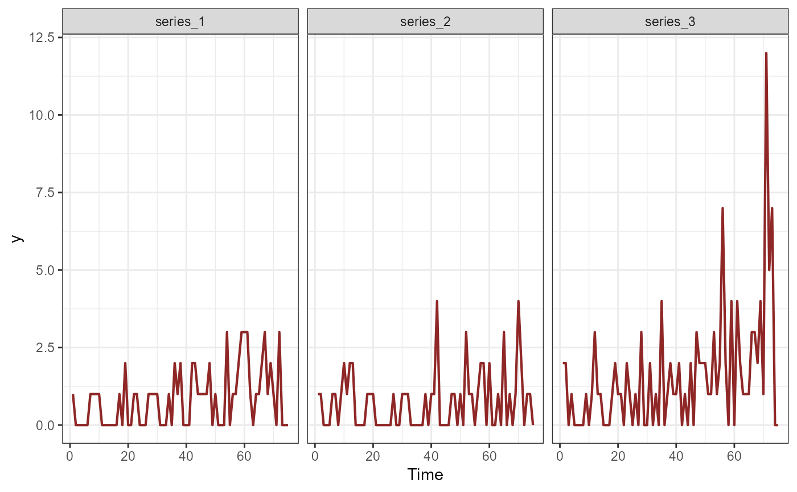

Plot observed time series used for mvgam modelling
Source:R/plot_mvgam_series.R
plot_mvgam_series.RdThis function takes either a fitted mvgam object or a data.frame object
and produces plots of observed time series, ACF, CDF and histograms for exploratory data analysis
Usage
plot_mvgam_series(
object,
data,
newdata,
y = "y",
lines = TRUE,
series = 1,
n_bins,
log_scale = FALSE
)Arguments
- object
Optional
listobject returned frommvgam. Eitherobjectordatamust be supplied.- data
Optional
data.frameorlistof training data containing at least 'series' and 'time'. Use this argument if training data have been gathered in the correct format formvgammodelling but no model has yet been fitted.- newdata
Optional
data.frameorlistof test data containing at least 'series' and 'time' for the forecast horizon, in addition to any other variables included in the linear predictor offormula. If included, the observed values in the test data are compared to the model's forecast distribution for exploring biases in model predictions.- y
Character. What is the name of the outcome variable in the supplied data? Defaults to
'y'- lines
Logical. If
TRUE, line plots are used for visualizing time series. IfFALSE, points are used.- series
Either a
integerspecifying which series in the set is to be plotted or the string 'all', which plots all series available in the supplied data- n_bins
integerspecifying the number of bins to use for binning observed values when plotting a the histogram. Default is to use the number of bins returned by a call tohistin baseR- log_scale
logical. Ifseries == 'all', this flag is used to control whether the time series plot is shown on the log scale (usinglog(Y + 1)). This can be useful when visualizing many series that may have different observed ranges. Default isFALSE
Value
A set of ggplot objects. If series is an integer, the plots will
show observed time series, autocorrelation and
cumulative distribution functions, and a histogram for the series. If series == 'all',
a set of observed time series plots is returned in which all series are shown on each plot but
only a single focal series is highlighted, with all remaining series shown as faint gray lines.
Examples
# Simulate and plot series with observations bounded at 0 and 1 (Beta responses)
sim_data <- sim_mvgam(family = betar(),
trend_model = RW(), prop_trend = 0.6)
plot_mvgam_series(data = sim_data$data_train, series = 'all')
plot_mvgam_series(data = sim_data$data_train,
newdata = sim_data$data_test, series = 1)
# Now simulate series with overdispersed discrete observations
sim_data <- sim_mvgam(family = nb(), trend_model = RW(),
prop_trend = 0.6, phi = 10)
plot_mvgam_series(data = sim_data$data_train, series = 'all')
